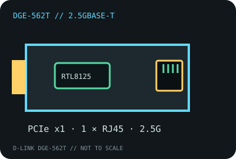

[ MODEL-SPECIFIC NETWORK HARDWARE RECORD ]
D-Link DGE-562T PCI Express 2.5G Ethernet Adapter
Single-port 2.5GBASE-T client card. This record follows the DGE-562T model; it does not imply that every hardware-label revision has an identical controller stepping or driver package.

IDENTIFICATION: Exact product SKU is DGE-562T. D-Link’s public documents do not assign one universal PCB revision; record the full revision printed on the individual card label before matching firmware or drivers.
Exact SKU, interface and compatibility
| Exact model / SKU / revision | D-Link DGE-562T; hardware revision is label-specific and not fixed by the model name. Verify the card sticker and PCB before support lookup. |
|---|---|
| Controller | Realtek RTL8125-family 2.5GbE PCIe controller; D-Link’s model documentation does not state a controller stepping. Do not infer a newer RTL8125B/RTL8125BG revision from the SKU alone. |
| Bus, ports and connector | PCI Express 2.1 x1; one 8P8C (commonly called RJ-45) copper port; standard-height bracket, with case clearance still to be checked. |
| Per-port link rates | 2.5GBASE-T, 1000BASE-T, 100BASE-TX and 10BASE-T with auto-negotiation. These are nominal Ethernet link rates, not measured payload throughput. |
| Driver and operating systems | D-Link’s archived packages list Windows 7/8/8.1/10 and Windows Server 2008/2012, plus Linux support through kernel 4.15. Newer Linux may use an in-kernel Realtek driver or the vendor r8125 package; confirm PCI ID and kernel support rather than assuming current D-Link certification. |
| Cabling and compatibility caveats | Use Cat 5e or better and a 2.5G-capable peer for 2.5GbE. Link speed falls back to a common supported rate. A physical x1 card requires an electrically available PCIe lane; an M.2, riser or NAS whitelist is a separate compatibility question. |
| Revision caveat | Do not treat DGE-562T/A1, A2 or other label variants as interchangeable without checking their own D-Link files. Confirm the label revision, controller marking, device ID and OS-specific driver. |
Identification and practical limits
The card adds a single multigigabit copper interface; it does not create a 2.5Gb/s Internet service or guarantee that a file transfer will reach line rate. Switch/router support, cabling, peer negotiation, driver behavior and host workload all matter. Record these with any measured result.
Manufacturer datasheet and installation documentation
- D-Link DGE-562T datasheet (PDF)Manufacturer technical sheet for the named card model.
- D-Link DGE-562T manual downloadsManufacturer directory for installation and revision-related files.
- D-Link DGE-562T product and support pageManufacturer product identification and links to revision-specific downloads.
- IEEE 802.3 Ethernet standardStandards context for Ethernet link signaling; not a card compatibility claim.